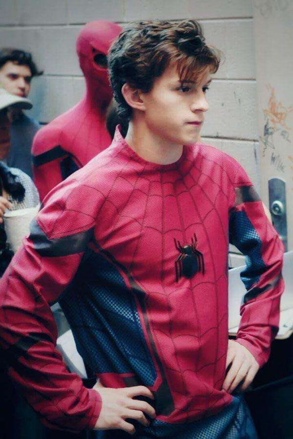

Thomas Stanley Holland was born on 1 June 1996 in the town of Kingston upon Thames, England to photographer Nicola and Dominic Holland, a comedian and author. He has three younger brothers.Holland attended Wimbledon College, a voluntary aided Jesuit comprehensive school, until 2012,followed b y the BRIT School for Performing Arts and Technology in Croydon.


Later in 2008, Holland and costar Tanner Pflueger were promoted to the lead role in the musical.In The Impossible, Holland played a teenager trapped with his family in the 2004 Indian Ocean earthquake and tsunami. On his transition from stage to screen, Holland found himself mainly challenged by the shift from live audience to camera.Holland featured in the drama film How I Live Now (2013),[30] lent his voice in a supporting role for the drama film Locke (2013),[31] and briefly appeared in Billy Elliot the Musical Live

In June 2015, Holland signed a six-picture deal with Marvel Studios to play a teenage Peter Parker.As part of the Marvel Cinematic Universe (MCU), he first appeared as Spider-Man in Captain America: Civil War. Holland starred in his solo film as Spider-Man / Peter Parker in Spider-Man: Homecoming. Despite taking inspiration from previous Spider-Man actors Tobey Maguire and Andrew Garfield, Holland wanted to add a sense of newness in his reinterpretation of the character.
